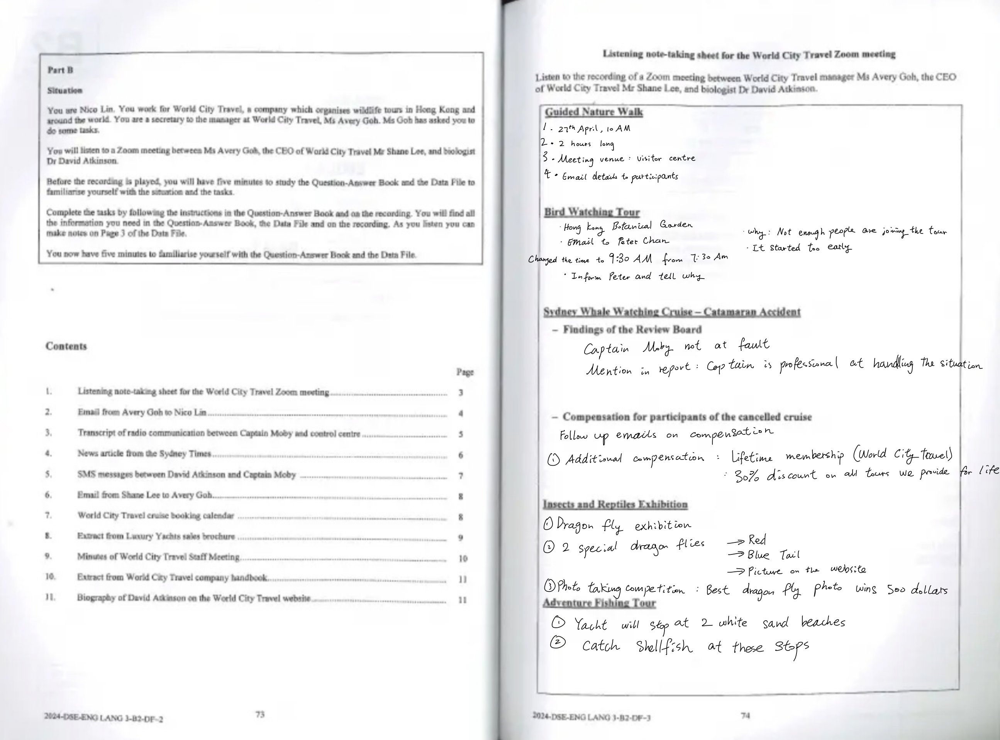
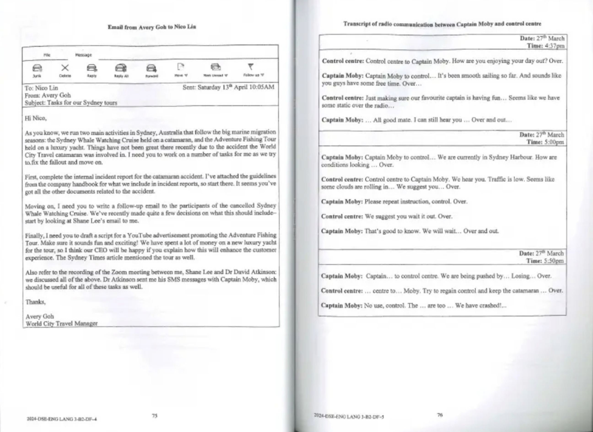
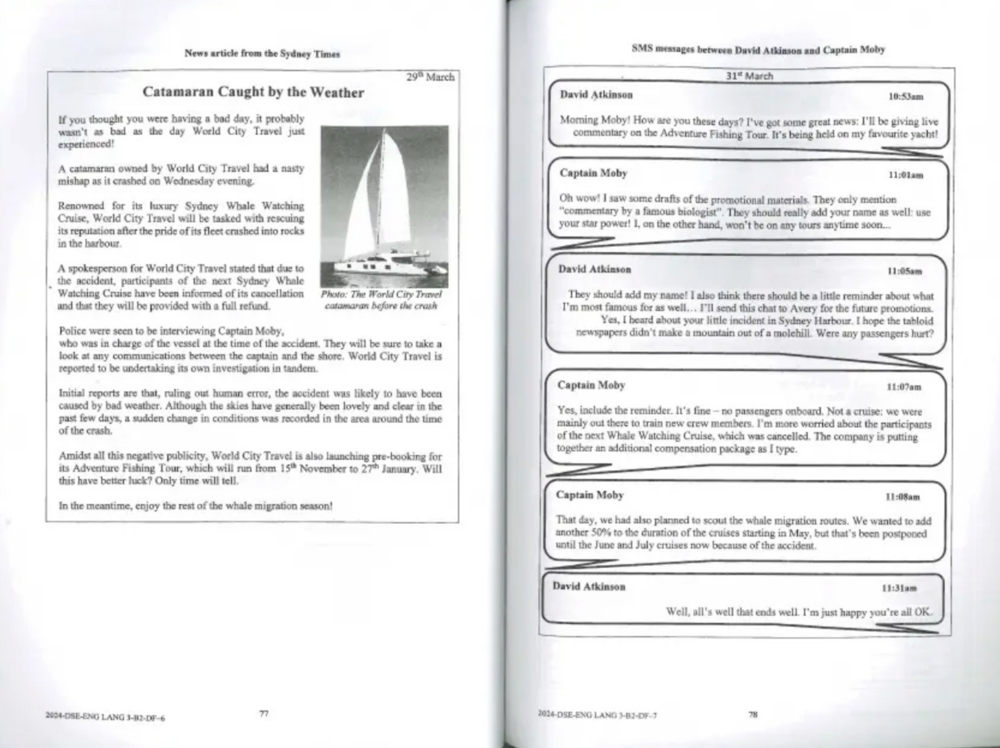
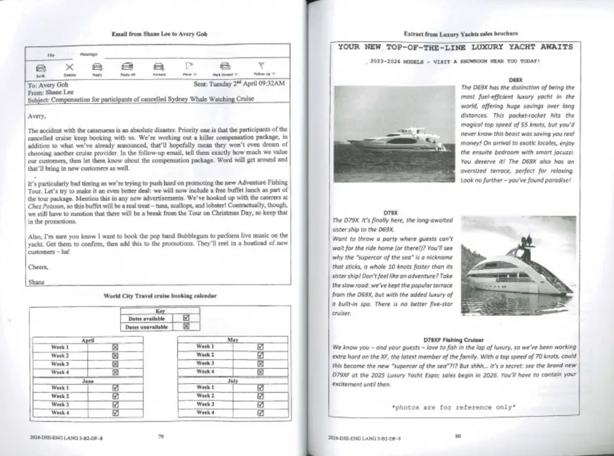
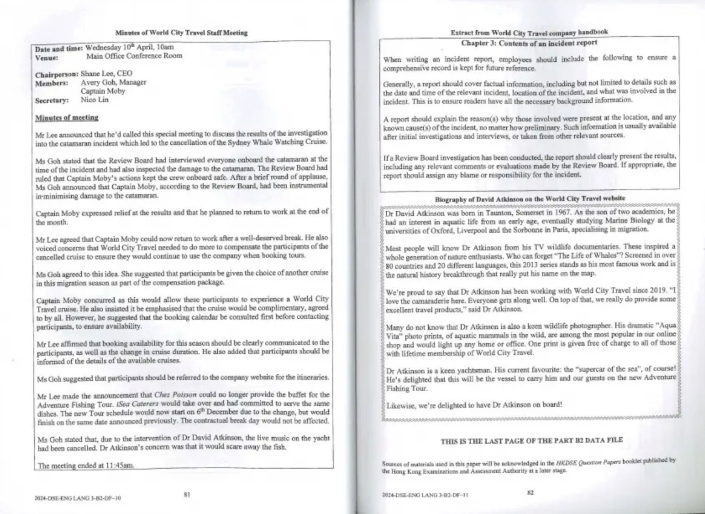

考生可見印刷資料
使用者提供的五頁相片式 PDF 重現官方印刷頁 2–11。它不是考評局發出的數碼原檔；第 3 頁手寫筆記是後加內容，已排除。
DSE English · Paper 3 · Part B2
按所提供的 2024 B2 資料檔掃描重建，並把印刷文字及錄音重製逐項分類。英文摘錄保留來源字眼；繁體中文及作答分析屬學習輔助。
來源邊界
使用者提供的五頁相片式 PDF 重現官方印刷頁 2–11。它不是考評局發出的數碼原檔；第 3 頁手寫筆記是後加內容，已排除。
原裝錄音、官方 tapescript、原裝 B2 問答簿及封面均未提供。相關文字只採用第三方重製並清楚標示，絕不冒充第一方檔案。
母語讀者：NOT RUN
無評分參考學生測試：NOT RUN
項目負責人批准：NOT RUN
查看 provenance inventory · 查看 source-unit ledger · 查看 defect/change register
題目合約
以下題目身份及字數來自第三方重製的官方問答簿文字；不是本頁自行補作。
Faithful facsimile
保留原始像素，按兩頁跨頁顯示。按圖可放大。第 3 頁手寫內容不是原卷印刷內容。





Clause-by-clause
每個文字單位只有一個 Type、一個答案狀態、四個固定問題。
Original-resolution inspection
照片、聊天順序、日曆格、遊艇比較及重要缺席關係分開處理。
Release gates